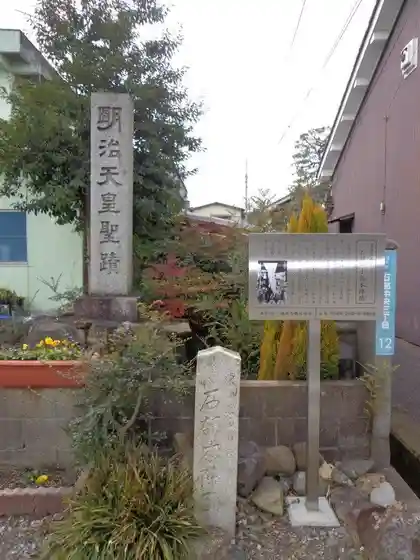
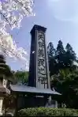
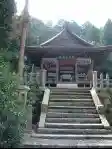
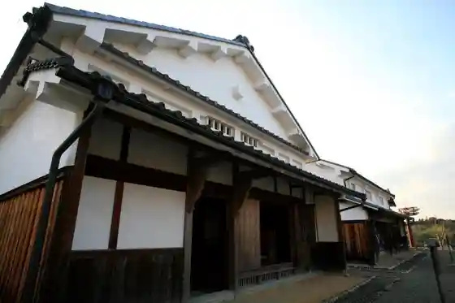

Ishibe Yado Kojima Honjin Ato
Konanshi, Shiga · Official / source link

Tenpo Gimin Hi
Konanshi, Shiga · Official / source link

Kichi Hime Shrine
Konanshi, Shiga · 0748-77-2520 · Official / source link

Mikumo Joshi
Konanshi, Shiga · 0748-71-2157 · Official / source link
Konanshi Tokaido Ishibe Yado Folk History Museum
Konanshi, Shiga · 0748-77-5400 · Official / source link

Juraku Village
Konanshi, Shiga · 0748-77-0041 · Official / source link
Ishibe Yado Iriguchi Nishi Nawate
Konanshi, Shiga · Official / source link
Mizumi Kuni Juni Bo Forest Juni Bo Onsen Yurara
Konanshi, Shiga · 0748-72-8211 · Official / source link
Uzan Bunka Sports Park
Konanshi, Shiga · 0748-77-5400 · Official / source link
Nigori Ike Nature Park
Konanshi, Shiga · 0748-71-2157 · Official / source link
Shiun Falls
Konanshi, Shiga · Official / source link
Ue Ashiho Shrine
Konanshi, Shiga · Official / source link
Ishibe Yado Dengaku Chaya
Konanshi, Shiga · 0748-77-5300 · Official / source link
JR Ishibe Eki
Konanshi, Shiga · 0570-00-2486 · Official / source link
Omi Tsukemo no Yamagami Main Shop
Konanshi, Shiga · 0120-359-486 · Official / source link
Ishibe Bunka Horu
Konanshi, Shiga · 0748-77-6250 · Official / source link
Nishi O Tera
Konanshi, Shiga · 0748-74-1051 · Official / source link
Myo Kan Tera
Konanshi, Shiga · 0748-72-7640 · Official / source link
Hotel Sankuresuto Kosai
Konanshi, Shiga · 0748-72-777 · Official / source link
Kosatsu Ba Ato Tokiwa Yakatato
Konanshi, Shiga · Official / source link
Ishibe Yado
Konanshi, Shiga · 0748-71-2157 · Official / source link
Hiramatsu no Utsukushimatsu Jisei Chi
Konanshi, Shiga · Official / source link
Rokkaku Shi no Kamon (Yotsu Meyui) Wo Kizan Da Iwa
Konanshi, Shiga · 0748-71-2157 · Official / source link
Yamaryu
Konanshi, Shiga · Official / source link
Eisho In
Konanshi, Shiga · 0748-72-0474 · Official / source link
Hakusan Shrine
Konanshi, Shiga · 0748-77-3813 · Official / source link
Dai Sagawa Suido
Konanshi, Shiga · Official / source link
Kichi Miko Shrine
Konanshi, Shiga · 0748-77-2246 · Official / source link
Sono Yo Tera
Konanshi, Shiga · 0748-72-0059 · Official / source link
Kitajima Shuzo
Konanshi, Shiga · 0748-72-0012 · Official / source link
Bodai Zendera
Konanshi, Shiga · 0748-74-1035 · Official / source link
Koka Kobunshi Sutajiamu
Konanshi, Shiga · Official / source link
Kosai Bunka Horu
Konanshi, Shiga · 0748-72-2133 · Official / source link
Koka Beifun Tai Yaki
Konanshi, Shiga · Official / source link
Choju Tera (Toji Konanshi Miyama)
Konanshi, Shiga · 0748-77-3813 · Official / source link
Garyu Forest
Konanshi, Shiga · 0748-77-5400 · Official / source link
Joraku Tera (Nishi Tera Konanshi Miyama)
Konanshi, Shiga · 0748-77-3089 · Official / source link
Jojo Tera
Konanshi, Shiga · 0748-72-0277 · Official / source link
Zen Mizu Tera (Konanshi Miyama)
Konanshi, Shiga · 0748-72-3730 · Official / source link
Hironori Sugi
Konanshi, Shiga · Official / source link
Fudo Tera
Konanshi, Shiga · Official / source link
Ebi Tani Kogei
Konanshi, Shiga · 0748-72-5788 · Official / source link
Hieda Shrine
Konanshi, Shiga · 0748-75-0775 · Official / source link
Atorie Ai
Konanshi, Shiga · 0748-74-0636 · Official / source link
Kokopia
Konanshi, Shiga · 0748-72-5552 · Official / source link
Koka Kantorii Kurabu
Konanshi, Shiga · 0748-72-1221 · Official / source link
Matsuo Shrine
Konanshi, Shiga · 0748-71-2157 · Official / source link
Hai Sho Bodai Tera
Konanshi, Shiga · 0748-71-2157 · Official / source link
Magai Fudomyo Zo
Konanshi, Shiga · 0748-71-2157 · Official / source link
Konanshi Sogo Gym
Konanshi, Shiga · Official / source link
Kon Ki Senshoku
Konanshi, Shiga · Official / source link
Iwane Yama (Juni Bo)
Konanshi, Shiga · Official / source link
Sei Fuku Tera (Konanshi)
Konanshi, Shiga · 0748-72-0126 · Official / source link
Ishibe Shukueki
Konanshi, Shiga · Official / source link
Konanshi Yakusho
Konanshi, Shiga · 0748-72-1290 · Official / source link